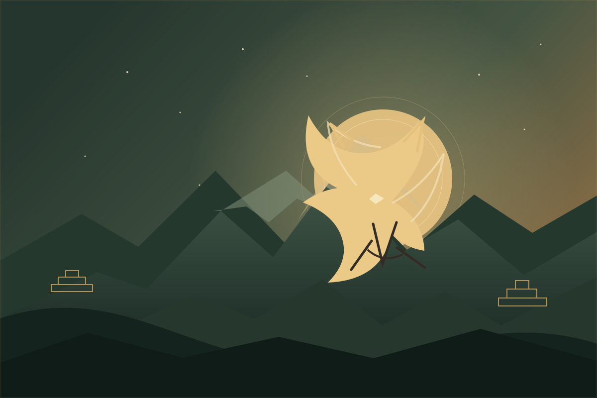

Fuego · Viento
Tonatiuh
El alba cobra forma en sus alas encendidas.
Un mundo por descubrir
Forja vínculos. Domina los elementos. Escribe tu propia historia en un universo de criaturas extraordinarias.
Estrategia por turnos · Aventuras sin límites

Encuentra tu leyenda
El alba cobra forma en sus alas encendidas.
Una corriente antigua que nunca deja de volar.
Guardián de los secretos bajo la superficie.
Un mundo, muchas estrategias
Prepara a tu equipo y encuentra tu propio ritmo. En Horizon Mythos, cada encuentro abre una nueva posibilidad.
Lee el terreno, combina afinidades y convierte cada turno en una oportunidad.
Conoce criaturas singulares y descubre cómo sus habilidades se complementan.
Explora paisajes con memoria, leyendas antiguas y nuevos horizontes.
Más allá de lo conocido
Auralia se extiende entre selvas de piedra, mares luminosos y cumbres que rozan las nubes. Cada territorio guarda su propio pulso y criaturas que esperan ser encontradas.
Conoce el LaboratorioCreado con curiosidad
Horizon Mythos es un proyecto independiente que une diseño de criaturas, estrategia y construcción de mundos. Una aventura que crece con cada idea compartida.
Explorar el proyecto